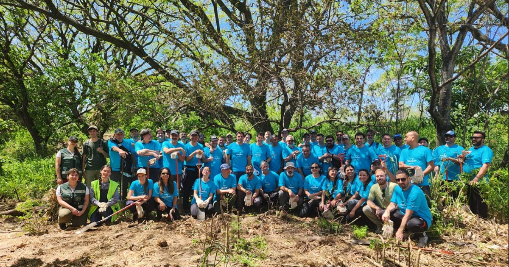

¿Quiénes Somos?

En Tierra Fértil, somos un grupo de apasionados por el medio ambiente y la sostenibilidad. Nuestra mision es promover la conciencia ambiental a través de la educación, la acción comunitaria y la colaboración con organizaciones locales e internacionales. Creemos que cada individuo tiene el poder de marcar la diferencia y estamos comprometidos a inspirar a otros a adoptar prácticas más sostenibles en su vida diaria.